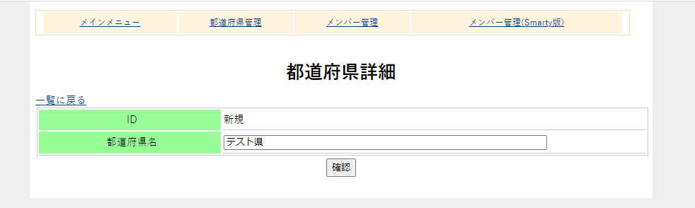

０．セットアップと最初のサンプル
０００．構造とセットアップ
PHPBaseはPHPを階層的に記述することで、各階層の役割を明確にし、コーディング規則の指針になるよう設計されたDBアクセス支援ライブラリです。ライブラリ自体のサイズは非常にミニマムなため、インクルードされるPHPファイルも、大変少なくなっています。
commonディレクトリ
PHPBaseはcommonディレクトリに配置されます。このディレクトリ自体はどこにあっても問題はありません。ただ、各ページのPHPファイルから相対的パスで見える位置にある必要があります。具体的に、サンプルコードの階層を以下に紹介します。
- sources
- common
- config.php
- contents_db.php
- contents_func.php
- controls.php
- controls_ex.php
- function.php
- libs.php
- pdointerface.php
- common
このうち赤くなっているファイルは環境に合わせてあるいはDBの内容に合わせて各利用者が記述します。
この章では、簡単な例として都道府県管理を紹介します。
DB接続
DB接続に必要な情報はconfig.phpに記述します。以下はダウンロードした状態のconfig.phpです。
<?php
/*!
@file config.php
@brief DB接続変数と、エンコードの定義
@copyright Copyright (c) 2021 Yamanoi Yasushi.
*/
////////////////////////////////////
//実行ブロック
//データベースマネージメント
define('DB_RDBMS','mysql');
//MySQLの場合のキャラ設定にSET NAMESを使用するかどうか
define('DB_MYSQL_SET_NAMES','1');
//ホスト(ローカルの場合は'localhost'と記述)
define('DB_HOST','********');
//ユーザー
define('DB_USER','********');
//パスワード
define('DB_PASS','********');
//DB名
define('DB_NAME','********');
//DBのキャラセット
define('DB_CHARSET','utf8');
//PHPのキャラセット
define('PHP_CHARSET','UTF-8');
コメントにあるようにホスト、ユーザー、パスワード、DB名を記述します。サイトのルートからのパスは、これらのPHPがアップするディレクトリが
http://www.hoge.huga/sources/
SQL文によるテーブルの作成
/sql/mysql_prefecture_sql.txtファイルには都道府県テーブルのSQL文が記述されています。このSQL文はMySQL特有の記述も入ってますので、ほかのDBMSで利用する場合は注意してください。このSQL文をコマンドラインもしくはphpMyAdminで実行してください。テーブルと47都道府県レコードが作成されます。
config.phpの設定とSQL文によるテーブルの作成が終わったら、/sources/ディレクトリ内をサーバーにアップします。
動作チェック
サーバーにアップしましたら、ブラウザから/sources/index.phpにアクセスします。上記のhttp://www.hoge.hugaがサイトURLであればhttp://www.hoge.huga/sources/index.php

図0000aa
続いて都道府県管理をクリックします。(ほかのメニューのリンクはクリックしないでください。まだ準備ができていません。1章以降でセットアップします)
図0000a
続いて詳細ページに移行します。どこか都道府県名のリンクをクリックしてみてください。以下の画面になります。
図0000b
ここで都道府県名を修正して確認すると、以下のようになります。
図0000c
ここで、更新をクリックするとレコードが更新されます。
また、一覧ページで新規で詳細ページに移行すると以下の画面になります。

図0000d
ここで、新規に追加できます。ここではテスト県を追加してみます。確認の後追加してみてください。
また、一覧ページでは削除もできます。各レコードにある削除確認ボタンをクリックすると以下のようなダイアログが出ます。ここでは先ほど追加したテスト県を削除してみます。
図0000e
ここでOKをクリックすると削除されます。
このように追加、更新、削除でできる形になっています。
この例にある都道府県は、そう変化するものではありませんので、追加や削除機能が必要かどうかは別として、このような機能を実装できます、という例です。
また追加をしますと、データベースの仕様としてプライマリキーは欠番になります。固定的なマスタテーブルの場合、このような欠番は一般的にはバグのもとにもなるので初期化しておきましょう。
SQL文によるテーブルの作成の方法で再初期化します。